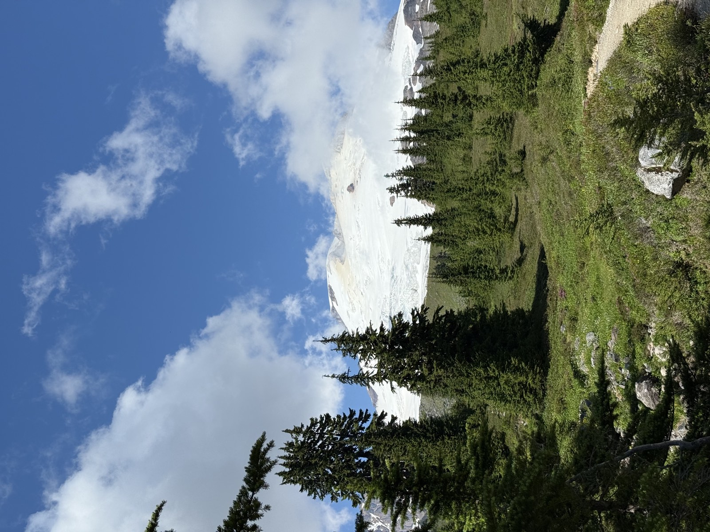
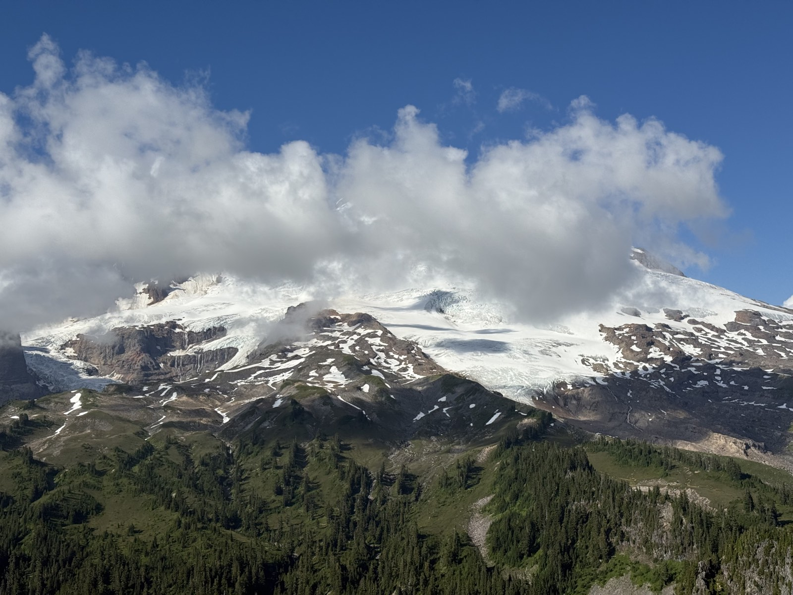
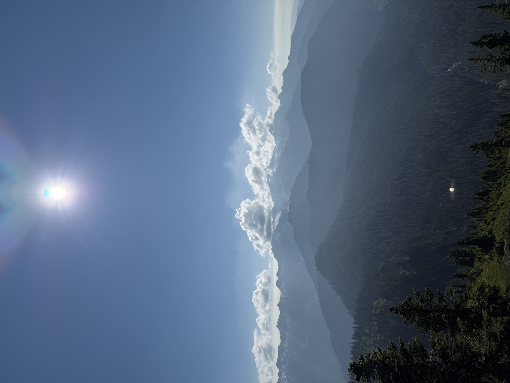
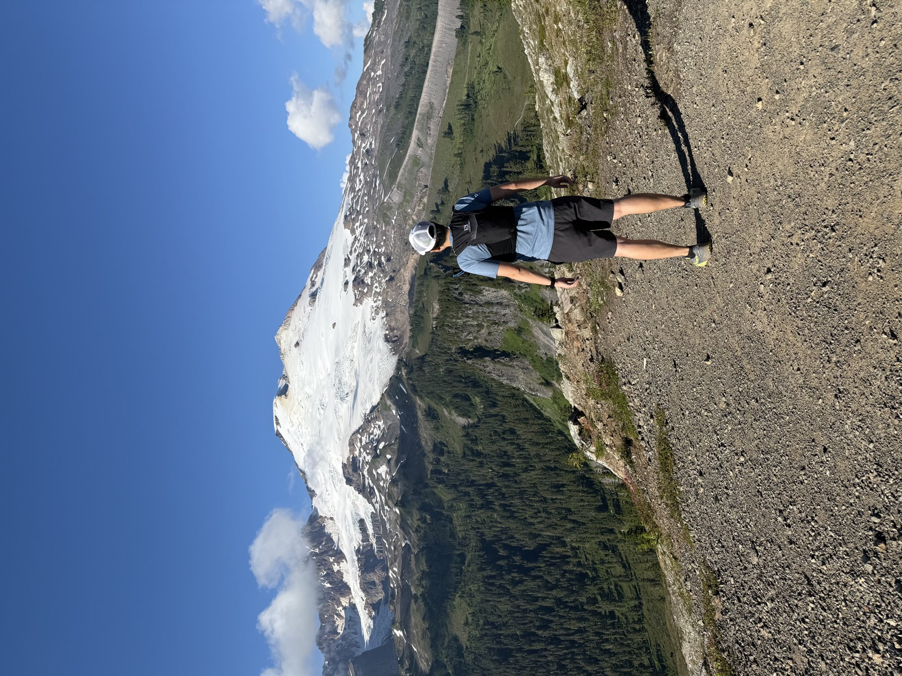
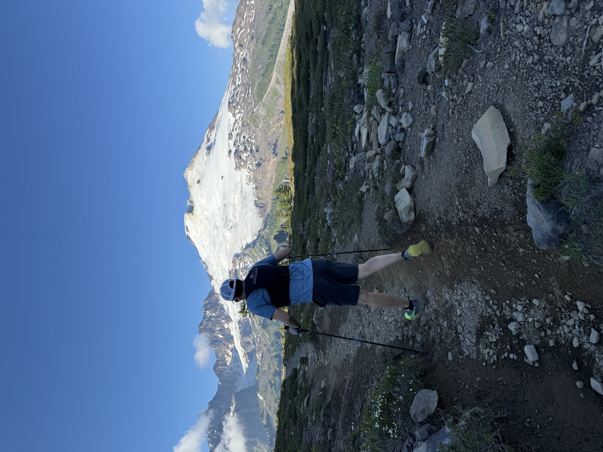
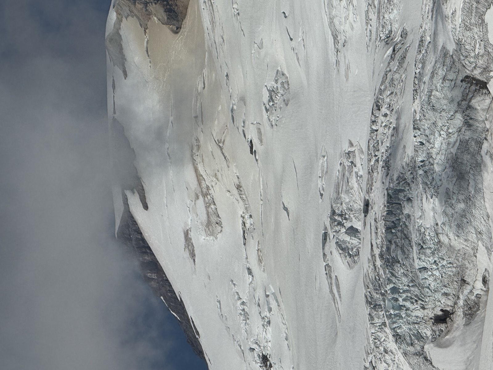
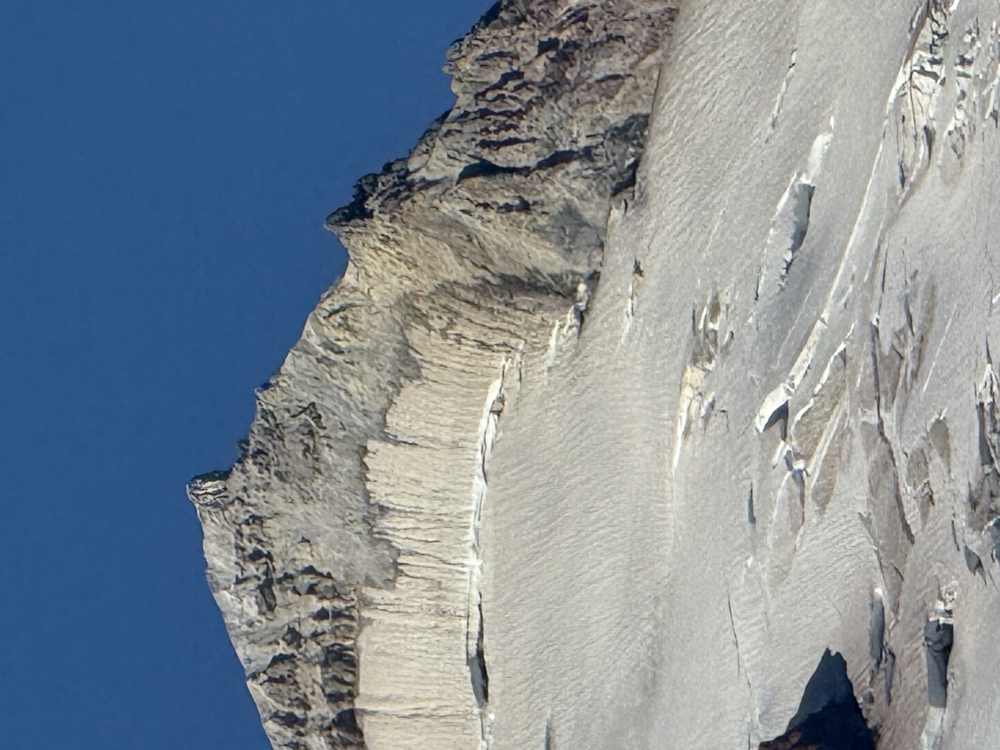
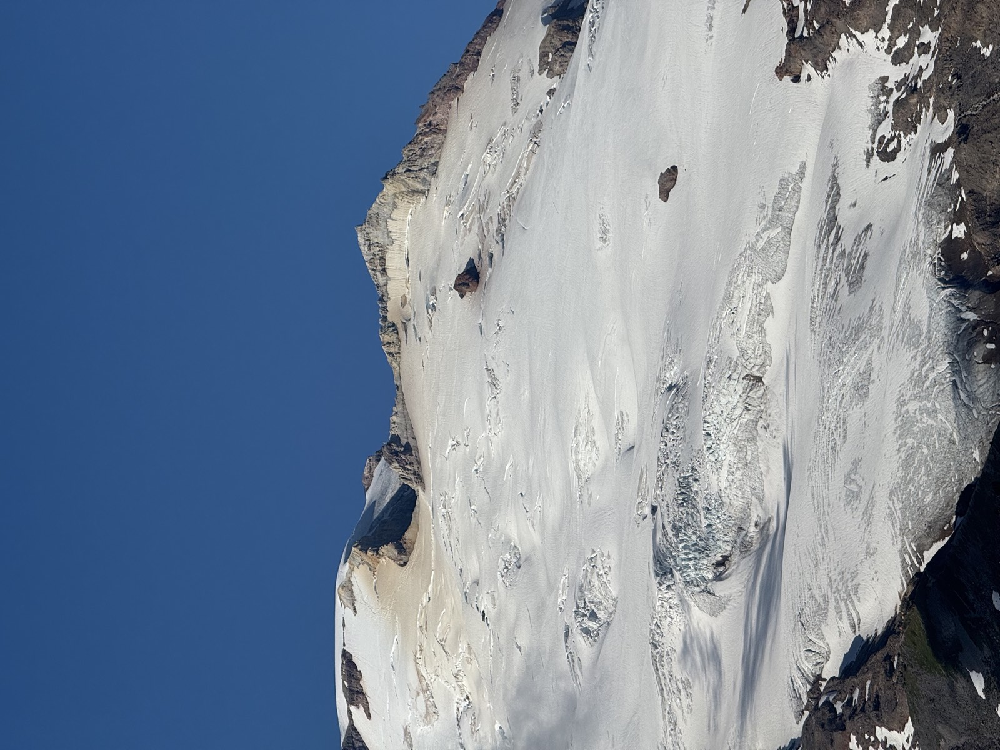
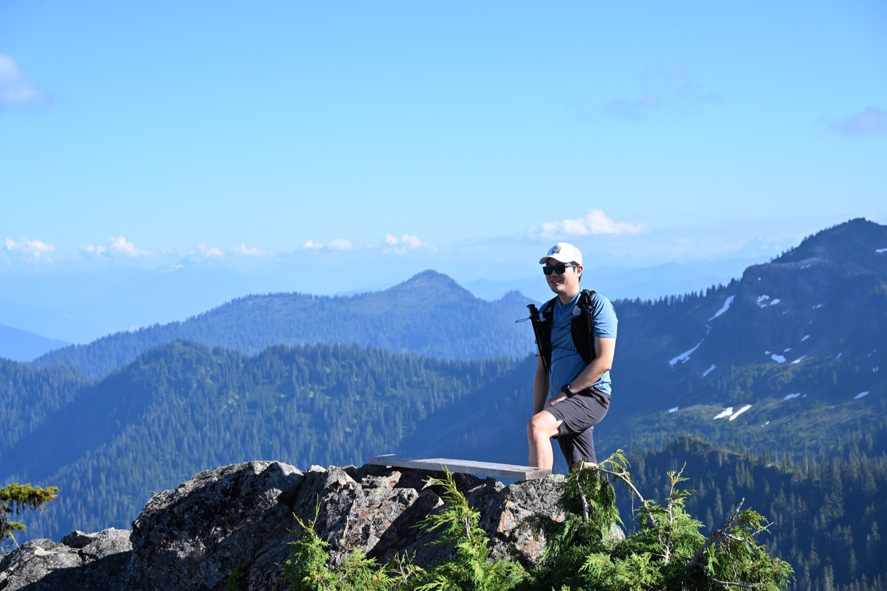

Park Butte is a 7.5-mile round-trip hike in Washington’s Mount Baker area, with about 2,200 feet of elevation gain. The trail leads through forest, meadows, and boulder fields before reaching a historic fire lookout with sweeping views of Mount Baker and the surrounding peaks.









